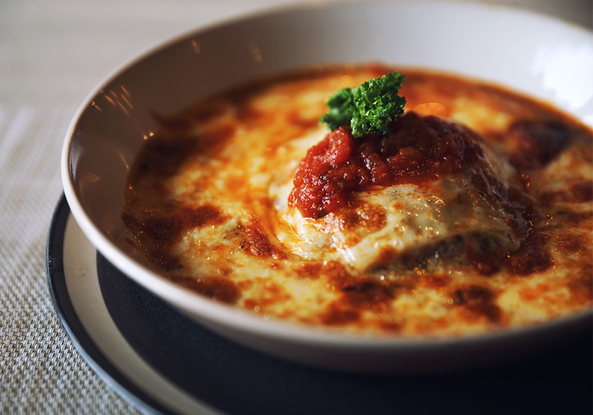

Lasagna
Volver

Descripcion
La lasaña está muy rica y no hay mucha discusión al respecto
Info de la receta
- Tiempo de preparación: 15 minutos
- Tiempo de cocinado: 1 hora y 30 minutos
- Tiempo total: 1 hora y 45 minutos
- Raciones: 6
- Categoría: plato principal
- Tipo de cocina: italiana
- Calorías por ración (kcal): 5045
Ingredientes para 3
Relleno
- 2 dientes de ajo
- 2 cebollas pequeñas o 1 grande
- 2 ramas de apio
- 1 zanahoria
- 50 ml de aceite de oliva virgen extra
- 1 cucharadita de sal
- 1 cucharadita de pimienta negra molida
- 1 cucharada de hierbas provenzales
- 5 lonchas de beicon
- 800 g de carne picada de ternera
- 650 g de tomate natural triturado
- 15 g de concentrado de tomate
Bechamel
- 80 g de mantequilla
- 80 g de harina de trigo
- 800 ml de leche
- 1/2 cucharadita de sal
- 1/4 cucharadita de pimienta blanca molida
Montaje
- 12 láminas pasta para lasaña
- 50 g de queso rallado (tipo gouda, cheddar...)
Pasos
- Para el relleno, pochamos todas las verduras, previamente picadas, en una cacerola con aceite, sal, pimienta y hierbas provenzales durante 15 minutos
- Picamos el beicon y lo agregamos a la cacerola junto con la carne picada de ternera, removiendo para que no se apelmace
- Cuando la carne cambie de color, añadimos el tomate natural triturado y el concentrado de tomate, salpimentamos y cocemos 45-50 minutos a fuego bajo
- Mientras tanto, preparamos la salsa bechamel calentando la mantequilla en una sartén y tostando ligeramente en ella la harina
- Agregamos la leche poco a poco, salpimentamos y cocemos la salsa a fuego bajo durante 10 minutos mientras removemos con unas varillas
- Montamos la lasaña en una fuente rectangular sobre una base de salsa bechamel
- Colocamos capas de pasta, relleno de carne y salsa, terminando con una capa de pasta y cubriendo generosamente con bechamel
- Espolvoreamos con queso rallado y cocemos en el horno precalentado a 200ºC con calor arriba y abajo, durante 30 minutos
- Cuando la lasaña de carne esté dorada, la retiramos del horno y esperamos a que se atempere un poco antes de servir